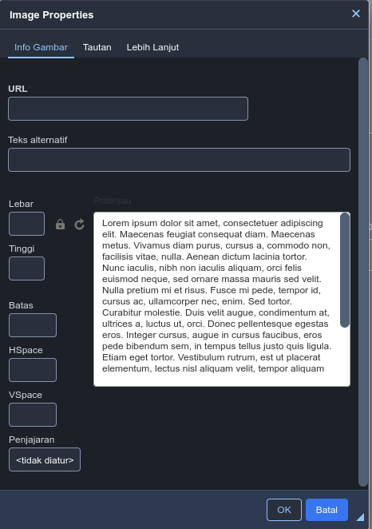
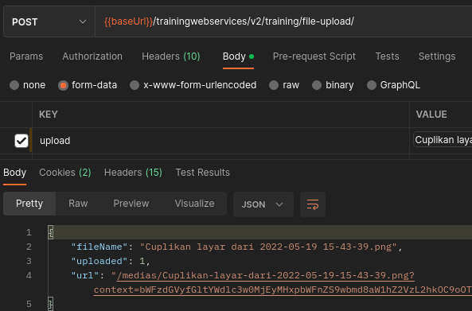
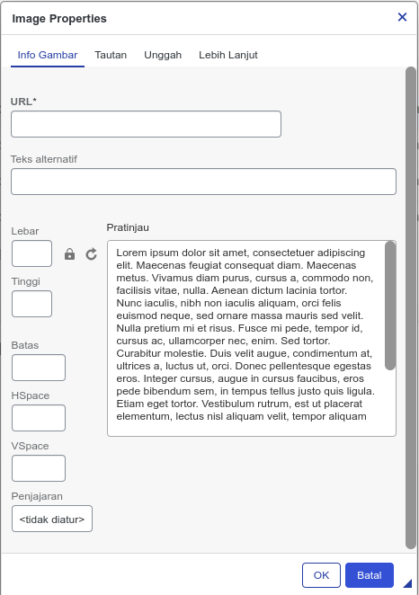
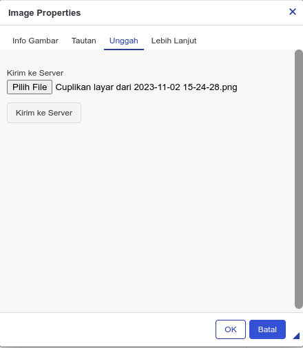
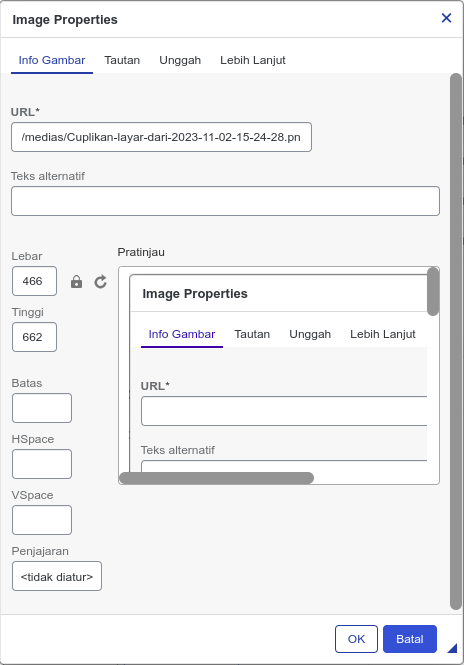
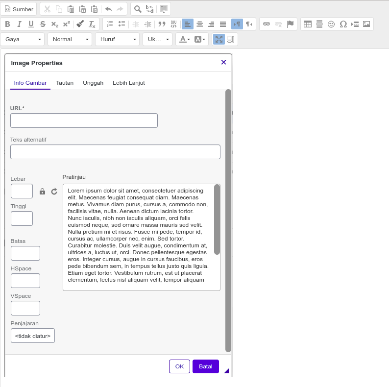

Intro
SAP Commerce's Backoffice uses CKEditor 4 as a WYSIWYG editor. Out of the box, CKEditor does support file/image upload, we just need to provide the API for file/image upload, although it's not enabled by default.
By default, the image dialog in the backoffice WYSIWYG editor is like this, you can only insert images by URL, with no option for upload, note that "Tautan" is "Link":

In this blog post, I will guide you on how to enable image upload in the backoffice WYSIWYG editor.
Prerequisites:
You need to have some basic knowledge of SAP Commerce and its extensions.
The Steps
- First, you need to know the response CKEditor is expecting, and the response is like this if the
upload is a success:
And if the upload is failing, the response CKEditor expecting is like this:{ "fileName": "filename.png", "uploaded": 1, "url": "{urlOfTheMedia}" }{ "error": { "message": "some error message, return this if upload is failed" }, "uploaded": 0 } - Based on the JSON in the first step, create a new DTO by adding this in the
trainingwebservices-beans.xml:
<bean class="org.training.webservices.upload.dto.MessageDTO"> <property name="message" type="String"/> </bean> <bean class="org.training.webservices.upload.dto.FileUploadResponseDTO"> <property name="uploaded" type="Integer"/> <property name="fileName" type="String"/> <property name="url" type="String"/> <property name="error" type="org.training.webservices.upload.dto.MessageDTO"/> </bean> - Create a new controller that will accept the "upload" parameter with the type of MultipartFile
and save it as a CatalogUnawareMedia:
@PostMapping("/file-upload") @ApiBaseSiteIdParam @ApiOperation(nickname = "uploadFile", value = "Upload a file. by Yusuf F. Adiputera") public ResponseEntity<FileUploadResponseDTO> uploadImageFile(@ApiParam("File to upload") @RequestParam("upload") final MultipartFile upload) { FileUploadResponseDTO responseDTO = new FileUploadResponseDTO(); try { CatalogUnawareMediaModel mediaModel = modelService.create(CatalogUnawareMediaModel.class); mediaModel.setFolder(mediaService.getFolder("images")); mediaModel.setCode("images" + "-" + System.currentTimeMillis() + upload.getOriginalFilename()); modelService.save(mediaModel); mediaService.setStreamForMedia(mediaModel, upload.getInputStream(), upload.getOriginalFilename(), upload.getContentType()); modelService.refresh(mediaModel); responseDTO.setUploaded(1); responseDTO.setFileName(mediaModel.getRealFileName()); responseDTO.setUrl(mediaModel.getURL()); return new ResponseEntity<>(responseDTO, HttpStatus.ACCEPTED); } catch (Exception e) { LOGGER.error("An error occurred while saving media: {}", e.getMessage(), e); responseDTO.setUploaded(0); MessageDTO messageDTO = new MessageDTO(); messageDTO.setMessage(e.getMessage()); responseDTO.setError(messageDTO); return new ResponseEntity<>(responseDTO, HttpStatus.BAD_REQUEST); } } - Create a new filter for file upload in
{webservicesextension}/web/src/org.training.webservices.v2.filter/FileUploadFilter.java
/** * The class FileUploadFilter * * @author Yusuf F. Adiputera */ public class FileUploadFilter extends AbstractUrlMatchingFilter { private Map<String, MultipartFilter> urlFilterMapping; private PathMatcher pathMatcher; @Override public void doFilterInternal(final HttpServletRequest request, final HttpServletResponse response, final FilterChain filterChain) throws IOException, ServletException { if (HttpMethod.POST.name().equalsIgnoreCase(request.getMethod())) { final MultipartFilter multipartFilter = getMultipartFilter(request.getServletPath()); if (multipartFilter != null) { multipartFilter.doFilter(request, response, filterChain); } else { filterChain.doFilter(request, response); } } else { filterChain.doFilter(request, response); } } protected MultipartFilter getMultipartFilter(final String servletPath) { for (Map.Entry<String, MultipartFilter> multipartFilterEntry : getUrlFilterMapping().entrySet()) { if (getPathMatcher().match(multipartFilterEntry.getKey(), servletPath)) { return multipartFilterEntry.getValue(); } } return null; } protected Map<String, MultipartFilter> getUrlFilterMapping() { return urlFilterMapping; } public void setUrlFilterMapping(final Map<String, MultipartFilter> urlFilterMapping) { this.urlFilterMapping = urlFilterMapping; } protected PathMatcher getPathMatcher() { return pathMatcher; } public void setPathMatcher(final PathMatcher pathMatcher) { this.pathMatcher = pathMatcher; } } - Register previous filter as bean inside
{webservicesextension}/web/webroot/WEB-INF/config/v2/filter-config-v2-spring.xml
Then add occFileUploadFilter in the FilterChainList<bean id="occAntPathMatcher" class="org.springframework.util.AntPathMatcher" /> <bean id="occFileUploadFilter" class="org.training.webservices.v2.filter.FileUploadFilter" > <property name="urlFilterMapping"> <ref bean="occFileUploadUrlFilterMappings" /> </property> <property name="pathMatcher" ref="occAntPathMatcher"/> </bean> <alias name="defaultOccFileUploadUrlFilterMappings" alias="occFileUploadUrlFilterMappings" /> <util:map id="defaultOccFileUploadUrlFilterMappings" key-type="java.lang.String" value-type="org.springframework.web.multipart.support.MultipartFilter"> <entry key="/**" value-ref="occMultiPartFilter"/> </util:map> <bean id="occMultiPartFilter" class="org.springframework.web.multipart.support.MultipartFilter"> <property name="multipartResolverBeanName" value="occMultipartResolver"/> </bean> <bean id="occMultipartResolver" class="org.springframework.web.multipart.commons.CommonsMultipartResolver"/><alias name="defaultCommerceWebServicesFilterChainListV2" alias="commerceWebServicesFilterChainListV2" /> <util:list id="defaultCommerceWebServicesFilterChainListV2"> <!-- some other filter --> <!-- ................. --> <!-- filter to handle multipart file upload --> <ref bean="occFileUploadFilter" /> </util:list> - Create a new file, named customckeditorconfig.js in
{backofficeextension}/backoffice/resources/cng/customckeditorconfig.js
CKEDITOR.editorConfig = function(config) { // replace this with your file upload URL config.filebrowserImageUploadUrl = '/trainingwebservices/v2/training/file-upload'; }; - Add this line inside {backofficeextension}/project.properties so CKEditor can
read the config:
backoffice.wysiwyg.config.uri=/cng/customckeditorconfig.js - Build the application by executing ant all
- Test the API from the Postman

- Open Backoffice, open any WYSIWYG editor and check if there's a new "upload"
tab. Note in this picture "Unggah" is "Upload",
"Tautan" is
"Link"

- Test Uploading an image by going to the "Upload" tab, click "Choose file" to browse for files,
and click "Send to server" to upload

- The image will be uploaded, you can change the height, and width if you'd like, then click ok


- Done
Limitation
The API will be open without any authentication since the webservices extension can't read the backoffice sessions, so if the webservices endpoint is exposed to the public, everyone will be able to upload some files without any authentication.
Originally published at SAP Community.